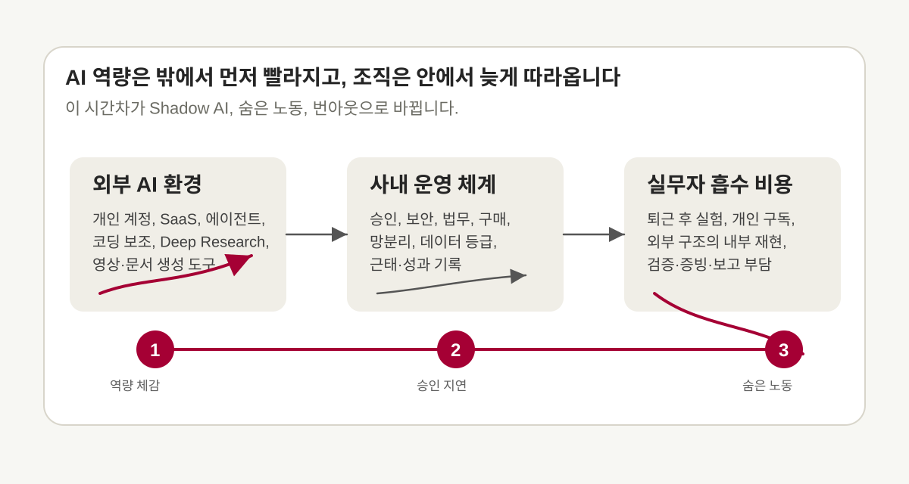
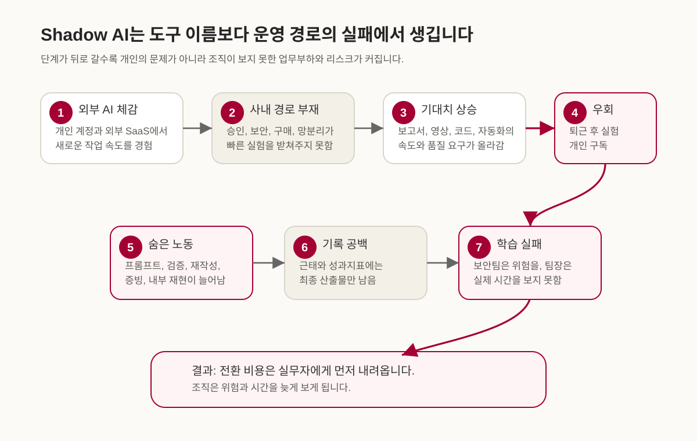
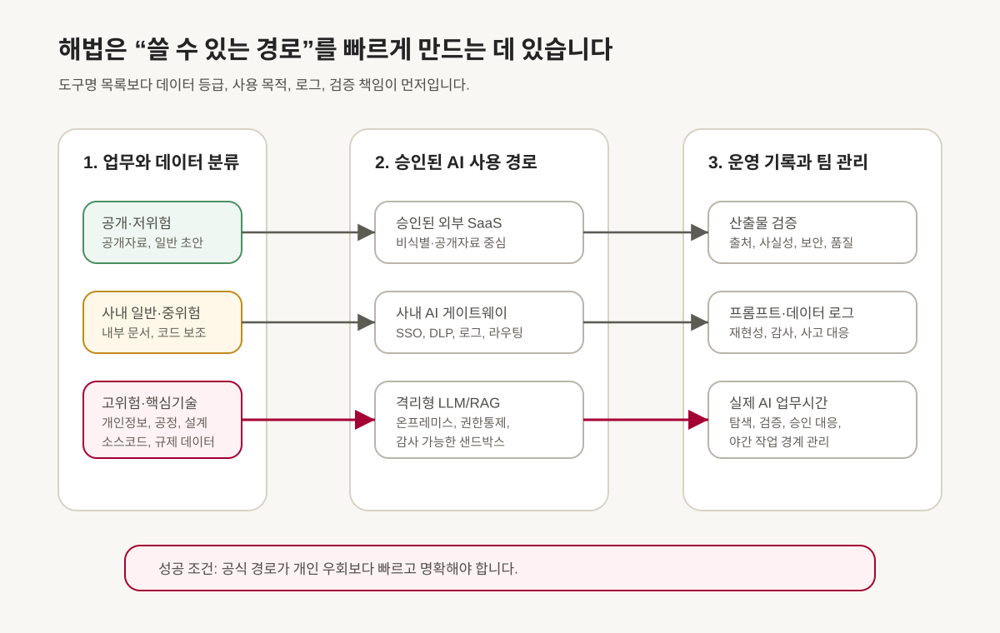
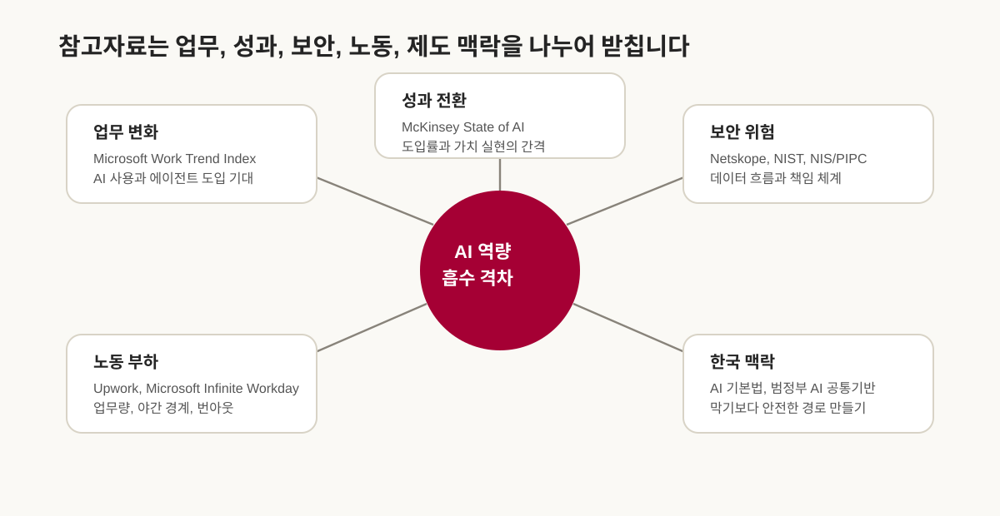

최근 팀 안에서 이런 장면을 자주 보게 됩니다. 누군가는 외부 AI 도구로 보고서 초안, 코드, 영상 콘셉트, 자동화 스크립트를 빠르게 만들어 봅니다. 그런데 회사 안으로 들어오면 같은 일을 그대로 할 수 없습니다. 외부 SaaS 접속이 막혀 있거나, 민감 데이터를 넣을 수 없거나, 사용 승인을 어디서 받아야 하는지 불명확합니다. 그 사이 경영진과 팀장은 이미 “AI로 더 빠르게, 더 잘할 수 있지 않느냐”는 기대를 갖고 있습니다.
이 간격에서 Shadow AI가 생깁니다. 겉으로는 승인받지 않은 외부 도구 사용처럼 보이지만, 배경에는 공식 도구와 승인 경로가 실제 업무 속도를 따라오지 못하는 운영 공백이 있습니다. 직원은 외부에서 먼저 배운 AI 역량을 개인 시간, 개인 계정, 개인 판단으로 흡수합니다. 보안민감 조직에서는 이 문제가 더 날카롭습니다. 국가핵심기술, 개인정보, 코드 자산, 공정정보, 고객정보가 얽힌 업무에서는 외부 AI 사용을 쉽게 열 수 없습니다. 그렇지만 사용 경로를 만들지 않고 금지만 강화하면, AI 사용은 사라지기보다 더 안 보이는 곳으로 이동합니다.

AI 사용은 이미 조직 안에 들어와 있습니다
- 직원들은 이미 AI를 씁니다. Microsoft 2024 Work Trend Index는 지식근로자 75%가 업무에 AI를 사용하고, AI 사용자 78%가 회사가 제공하지 않은 도구를 가져와 쓴다고 보고했습니다.
- 경영진도 AI를 원합니다. Microsoft 2025 Work Trend Index는 리더 82%가 2025년을 전략과 운영을 다시 생각해야 하는 해로 보며, 81%가 12-18개월 안에 에이전트가 회사 AI 전략에 중간 이상으로 들어올 것이라고 답했다고 설명합니다.
- 조직 성과는 자동으로 따라오지 않습니다. McKinsey 2025 State of AI는 2025년 조사에서 88%가 최소 한 업무 기능에서 AI를 정기적으로 사용한다고 보고했지만, AI 사용으로 5% 이상 EBIT 효과와 유의미한 가치를 낸 고성과 조직은 약 6%라고 구분했습니다.
- 보안 리스크는 실제입니다. Netskope 2026 Cloud and Threat Report는 생성형 AI 데이터 정책 위반이 전년 대비 두 배로 늘었고, 평균 조직이 월 223건의 관련 위반을 본다고 보고했습니다.
- 번아웃도 실제입니다. Upwork 2024 연구는 C-level 리더 96%가 AI 생산성 향상을 기대하지만, AI 사용 직원 77%는 오히려 업무량이 늘었다고 답했다고 밝혔습니다. Upwork 2025 연구는 AI로 생산성 향상을 크게 느낀 노동자일수록 번아웃 비율이 88%로 높았다고 보고했습니다.
Shadow AI는 막힌 경로의 증상입니다
회사 안에서 Shadow AI를 이야기할 때, 논의가 빨리 “허용할 것인가, 금지할 것인가”로 좁아지는 경우가 많습니다. 하지만 현장의 순서는 조금 다릅니다. 먼저 직원이 외부 AI의 효용을 체감합니다. 문서 초안이 빨라지고, 코드 탐색이 쉬워지고, 회의록과 발표 자료의 구조가 잡히고, 반복 업무 자동화의 가능성이 보입니다. 다음으로 회사 내부 경로가 그 속도를 받쳐주지 못한다는 사실을 만납니다.
이때 직원이 먼저 만나는 것은 규정 문구보다 작업의 막힘입니다. 어떤 데이터는 외부 모델에 넣을 수 없습니다. 어떤 도구는 계정 구매가 안 됩니다. 내부망에서는 최신 기능을 쓸 수 없습니다. 보안 검토가 필요하지만 절차와 소요시간이 분명하지 않습니다. 팀장은 결과를 요구하지만 승인권한, 예산권한, 예외처리 권한은 갖고 있지 않습니다. 그래서 실무자는 퇴근 후 공개자료만 가지고 구조를 실험하거나, 개인 구독으로 도구를 익히거나, 외부에서 만든 아이디어를 회사 안에서 다시 손으로 재현합니다.

KPMG와 University of Melbourne의 2025 글로벌 연구를 보면 이 흐름이 이미 넓게 퍼져 있습니다. 조사에 따르면 직원 58%가 업무에서 AI를 정기적으로 쓰고, 생성형 AI 도구는 회사 제공 옵션보다 무료 공개 도구가 더 널리 쓰입니다. 같은 보고서는 많은 직원이 회사 정책에 어긋나는 방식으로 AI를 쓰거나 민감한 회사 정보를 공개 AI 도구에 올린다고 설명합니다. 더 어려운 지점은 투명성입니다. 보고서는 절반이 넘는 직원이 AI로 일을 했다는 사실을 드러내지 않거나, AI 산출물을 자신이 만든 것처럼 제시한다고 지적합니다.
이 수치는 개인의 부주의만 말하지 않습니다. 직원이 숨긴다는 것은 조직이 실제 사용량, 실제 병목, 실제 위험을 배우지 못한다는 뜻입니다. 보안팀은 어떤 데이터가 어디로 흘러가는지 보지 못하고, 팀장은 AI 작업에 실제로 얼마의 시간이 들어갔는지 모릅니다. 경영진은 인프라 투자가 필요한지 판단하기 어렵고, 승인권자는 사고 책임만 크게 보게 됩니다.
한국 보안민감 조직의 제약은 실제입니다
한국의 반도체, 디스플레이, 배터리, 방산, 에너지, 공공 인프라 조직에서는 외부 생성형 AI 사용을 쉽게 열 수 없습니다. 여기에는 문화적 보수성만 있는 것이 아닙니다. 국가핵심기술, 산업기술 유출, 개인정보 국외 이전, 내부망 분리, 협력사·고객 데이터, 코드 자산, 공정 recipe가 얽혀 있습니다. 외부 AI 서비스에 무엇을 넣는지에 따라 기술유출, 개인정보보호, 계약 위반, 수출통제 이슈가 한꺼번에 생길 수 있습니다.
2023년 삼성전자가 직원의 생성형 AI 사용을 제한한 사례는 이 문제를 상징합니다. CNBC 보도에 따르면 삼성전자는 직원이 ChatGPT 등 생성형 AI 서비스를 오용한 뒤 회사 PC를 통한 생성형 AI 사용을 임시 제한했고, 직원에게 회사 관련 정보나 개인정보를 입력하지 말라고 안내했습니다. 당시 여러 매체는 직원이 민감한 코드 또는 내부 정보를 외부 AI에 넣은 사례를 다뤘습니다. 보안민감 대기업의 외부 AI 통제에는 추상적 우려를 넘어 실제 사고 대응의 기억이 깔려 있습니다.
2025년 DeepSeek 대응도 같은 맥락입니다. 국가정보원은 2025년 2월 10일 보도자료에서 DeepSeek에 대해 과도한 개인정보 수집, 모든 입력 데이터의 학습데이터 활용, 광고주 등과의 제한 없는 정보 공유, 국외 서버 저장 등 보안 유의사항을 확인했다고 밝혔습니다. 개인정보보호위원회는 2025년 2월 17일 DeepSeek 앱의 국내 서비스가 잠정 중단됐고, 개인정보보호법에 따른 개선과 보완 후 재개될 예정이라고 설명했습니다.
이런 자료를 보면 보안부서의 보수성을 단순히 낡은 관성으로만 볼 수 없습니다. 보안이 필요하다는 점은 분명합니다. 부족한 것은 보안을 만족하면서도 실무자가 빠르게 실험할 수 있는 경로입니다. 흥미롭게도 정부도 이 방향으로 움직이고 있습니다. 2025년 11월 24일 정책브리핑은 정부가 행정 내부망에서 민간 AI 챗서비스 등을 활용할 수 있도록 범정부 AI 공통기반 서비스를 시작한다고 설명했습니다. 외부 AI를 무조건 막는 대신, 보안이 확보된 내부 경로에서 최신 AI를 쓰게 하려는 시도입니다.
AI FOMO는 계층을 따라 내려옵니다
이번 대화에서 가장 중요한 개념은 AI FOMO Cascade입니다. FOMO는 뒤처질 것 같은 불안입니다. AI 시대에는 경영진, 팀장, 승인권자, 실무자가 서로 다른 FOMO를 갖습니다. 경영진은 경쟁사가 AI로 생산성을 끌어올릴까 불안합니다. 팀장은 위에서 내려오는 성과 요구를 맞추지 못할까 불안합니다. 승인권자는 허용했다가 사고가 나면 책임을 질까 불안합니다. 실무자는 외부에서는 가능한 일이 회사 안에서는 안 되는 상황에서 자신의 역량과 커리어가 뒤처질까 불안합니다.
이 네 집단 중 누구도 완전히 악역은 아닙니다. 경영진은 AI 투자를 하고 싶어도 비용, ROI, 보안 사고, 책임 소재를 고민합니다. 팀장은 결과를 내야 하지만 보안정책, 구매, 법무, 망분리 예외를 바꿀 권한이 없습니다. 승인권자는 허용의 성과보다 사고의 책임을 더 크게 떠안습니다. 실무자는 AI를 쓰면 일이 빨라지는 것을 알지만, 공식 경로가 없으니 자신의 시간으로 먼저 배웁니다.
여기서 조직의 모순이 생깁니다. 경영진은 AI 성과를 기대하지만, 전사 인프라 투자는 늦어집니다. 팀장은 “정식 절차를 지키라”고 말하면서도 AI 수준의 결과물을 요구합니다. 승인권자는 위험을 줄이기 위해 판단을 보류합니다. 실무자는 공식 경로가 막힌 일을 밖에서 해결합니다. 모두가 나름 합리적으로 행동했는데, 결과는 비합리적입니다.
이 구조를 이해해야 해결책도 달라집니다. 단순히 “직원이 외부 AI를 쓰지 못하게 하자”는 접근은 실무자의 기술 FOMO와 업무 압박을 다루지 못합니다. “팀장이 근태를 잘 기록하라”고 말하는 것도 충분하지 않습니다. 숨은 노동은 기록 의지만으로 풀기 어렵습니다. 공식 업무로 인정받지 못하는 탐색·실험·검증·승인 대응이 계속 늘어나기 때문입니다.
숨은 노동은 생산성 수치 밖에 있습니다
AI는 분명 생산성을 높일 수 있습니다. 문서 초안이 빨리 나오고, 코드 탐색이 쉬워지고, 더 많은 자료를 짧은 시간 안에 검토할 수 있습니다. 하지만 실제 업무에서는 AI가 줄인 일과 새로 만든 일이 동시에 존재합니다. 초안을 만들면 검증해야 합니다. 외부 자료를 요약하면 출처를 다시 확인해야 합니다. 코드 제안을 받으면 테스트와 보안 점검이 필요합니다. 영상이나 발표 자료를 만들면 사실성, 저작권, 내부 표현, 브랜드 기준을 다시 봐야 합니다.
Microsoft의 2025 Infinite Workday 분석은 이미 업무시간의 경계가 흐려진 상황을 다룹니다. Microsoft 365 사용자의 평균 근로자는 하루 117개의 이메일과 153개의 Teams 메시지를 받고, 한국은 Teams 메시지 증가율이 15%를 넘는 국가군으로 언급됩니다. 오전 6시에 이메일을 확인하고, 핵심 업무시간은 회의와 알림으로 쪼개지고, 저녁과 주말에도 업무 신호가 반복됩니다.
AI가 이런 환경에 들어오면 두 가지 길이 가능합니다. 하나는 반복 업무를 줄이고 집중 시간을 회복하는 길입니다. 다른 하나는 더 빠른 응답, 더 많은 산출물, 더 복잡한 검증 요구를 만들어 이미 망가진 리듬을 더 빠르게 돌리는 길입니다. Microsoft도 같은 글에서 AI가 일의 리듬을 다시 설계할 때 도움이 될 수 있지만, 그렇지 않으면 고장난 시스템을 가속할 위험이 있다고 설명합니다.
Upwork의 2024년과 2025년 자료에서는 이 긴장이 더 직접적으로 드러납니다. 2024년 조사에서는 C-level 리더 96%가 AI가 생산성을 높일 것으로 기대했지만, AI를 쓰는 직원 77%는 업무량이 늘었다고 답했습니다. 71%의 정규직 직원은 번아웃을 호소했습니다. 2025년 조사에서는 AI 사용으로 평균 40%의 생산성 향상을 느끼는 직원들이 있었지만, 생산성 향상이 가장 큰 집단에서 번아웃 비율도 88%로 높게 나타났습니다.
이 수치를 한국 보안민감 조직에 그대로 복사해 넣을 수는 없습니다. 한국 대기업 내부에서 “AI 때문에 몇 시간의 숨은 노동이 늘었다”는 공개 정량 통계는 아직 제한적입니다. 다만 정성적 메커니즘은 분명합니다. 공식 경로가 느린 상태에서 AI 수준 산출물을 요구하면, 탐색, 학습, 외부 실험, 내부 재현, 검증, 승인 문서화가 근무시간 밖으로 밀릴 가능성이 커집니다. 이 시간이 기록되지 않으면 조직은 AI 도입 비용을 과소평가합니다.
공식 사용 경로가 Shadow AI를 줄입니다
보안민감 조직이 해야 할 일은 외부 AI를 무조건 열어주는 것이 아닙니다. 중요한 데이터와 업무를 보호해야 합니다. 다만 도구명 중심의 단순 정책은 오래 버티기 어렵습니다. “ChatGPT 허용”, “Claude 금지”, “Gemini 검토”, “Cursor 보류” 같은 방식은 AI 생태계의 변화 속도를 따라가기 어렵습니다. 모델 버전, 데이터 정책, API 기능, 에이전트 기능, 요금제, 확장 기능이 계속 바뀌기 때문입니다.
정책의 단위는 도구명보다 사용 패턴이어야 합니다. 공개자료 요약인지, 비식별 내부자료 초안 작성인지, 코드 보조인지, 개인정보가 포함된 고객 분석인지, 국가핵심기술 관련 공정자료인지 먼저 나누어야 합니다. 그리고 각 범주에 맞는 사용 경로를 정해야 합니다. 공개·저위험 업무는 승인된 외부 SaaS를 빠르게 쓸 수 있습니다. 사내 일반자료와 중위험 업무는 SSO, DLP, 프롬프트 로깅, 모델 라우팅이 있는 사내 AI 게이트웨이를 통과하게 할 수 있습니다. 고위험·핵심기술 업무는 격리형 LLM, 사내 RAG, 온프레미스 에이전트 샌드박스가 필요합니다.

NIST AI Risk Management Framework는 AI 제품과 시스템의 설계, 개발, 사용, 평가 과정에서 신뢰성 요소를 통합하도록 돕는 자발적 프레임워크로 제시됩니다. 2024년 7월에는 생성형 AI에 특화된 NIST AI 600-1 Generative AI Profile도 나왔습니다. 두 자료는 기업이 AI를 도구 구매 차원을 넘어 위험 식별, 측정, 관리, 책임 배분의 문제로 다뤄야 한다는 점을 분명히 합니다.
한국도 AI 법제와 공공 인프라의 방향이 바뀌고 있습니다. Korea.net은 2026년 1월 22일 AI 기본법 시행을 소개하며, AI 정책과 행정체계를 codify하는 포괄 법률이라고 설명했습니다. 이 변화는 기업의 실무 도입에도 영향을 줍니다. AI 활용은 이제 IT 부서의 선택을 넘어 신뢰, 투명성, 안전, 개인정보, 고영향 AI 판단, 내부 책임체계와 연결되는 의사결정입니다.
팀장은 결과 요구권만으로는 부족합니다
중간관리자의 역할도 바뀌어야 합니다. 지금 많은 팀장은 결과 요구와 절차 준수 사이에 끼어 있습니다. “보안 위반하지 말라”, “승인받고 하라”, “근태를 기록하라”, “결과물은 빨리 달라”는 말은 각각 맞지만, 한 문장으로 묶이면 실무자에게 풀기 어려운 문제를 줍니다. 팀장이 AI를 활용하라고 말하려면, AI를 활용할 수 있는 환경을 조직에 요청할 권한도 있어야 합니다.
팀장에게 필요한 것은 AI 도구 필요성을 공식 요청하는 권한, 승인 지연을 escalation하는 권한, 샌드박스 우선순위를 요청하는 권한, AI 실험 시간을 업무로 인정하는 권한, 야간 AI 작업을 중단시키는 권한입니다. 또한 팀장은 AI 작업의 실제 시간을 보아야 합니다. 로그인 시간이나 최종 산출물만으로는 부족합니다. 프롬프트 설계, 외부 자료 검증, 결과 수정, 보안 검토 대응, 내부 재현, 승인 문서화가 얼마를 차지했는지 태깅해야 합니다.
이 기록이 감시용으로 보이면 아무도 말하지 않습니다. 운영 개선 자료가 되려면 어떤 업무를 해결하려 했는지, 왜 내부 도구로 어려웠는지, 외부 도구에서 어떤 기능이 유효했는지, 어떤 데이터는 사용하지 않았는지, 내부화하려면 무엇이 필요한지를 기록해야 합니다. 그래야 hidden work가 조직 지표로 바뀝니다.
승인체계는 정적 목록에서 동적 가드레일로 바뀌어야 합니다
전통적인 승인체계는 정적 목록처럼 움직입니다. 이 도구는 허용, 저 도구는 금지, 이 사이트는 차단, 저 사이트는 예외 승인입니다. 이 방식은 변화가 느린 업무 도구에는 어느 정도 작동합니다. 그러나 생성형 AI와 에이전트 도구는 기능, 모델, 데이터 정책, API, 확장 프로그램, 가격, 배포 형태가 빠르게 바뀝니다. 승인받은 도구가 몇 달 뒤에는 더 이상 최적이 아닐 수 있고, 금지된 도구의 기능이 승인된 도구 안으로 들어올 수도 있습니다.
그래서 승인체계는 도구 목록을 관리하는 데서 멈추지 말고 가드레일 역할을 해야 합니다. 데이터 등급, 사용 목적, 출력 위험, 로그 조건, 검증 책임, 사람 승인 지점을 기준으로 정책을 설계해야 합니다. 위험도가 낮은 공개자료 요약은 1-3일 안에 결정해야 합니다. 사내 일반자료 기반 보고서나 코드 보조는 1-2주 안에 승인 여부를 알려야 합니다. 개인정보, 고객정보, 제한 기술자료는 더 긴 검토가 필요하더라도 심사 기준과 처리 목표 시간을 공개해야 합니다. 국가핵심기술과 핵심 공정·설계·핵심 코드는 별도 심의가 필요하지만, 민감정보 없는 샌드박스 PoC는 열어두어야 합니다.
여기서 Approval Debt, 즉 승인 부채라는 표현이 유용합니다. 승인 부채는 빠르게 실험하고 검증해야 할 AI 업무가 승인 대기, 증빙, 보안검토, 계정 발급에 막혀 누적되는 지연 비용입니다. 기술 부채가 코드를 느리게 만들듯, 승인 부채는 조직의 AI 학습 속도를 느리게 만듭니다. 이 부채가 쌓이면 실무자는 더 많은 일을 밖에서 해결하고, 조직은 더 적게 배웁니다.
실행 순서
첫 번째 단계에서는 두꺼운 정책 문구보다 실제로 쓸 수 있는 경로를 먼저 만들어야 합니다. 공개자료 기반 업무, 사내 일반자료 기반 업무, 고위험 민감자료 업무를 나누고 각 경로에서 쓸 수 있는 AI 환경을 정해야 합니다. 이때 보안팀, IT, 법무, HR, 현업 PMO가 같이 들어와야 합니다. 한 부서가 혼자 만들면 사용성과 책임이 어긋납니다.
두 번째 단계는 사내 AI 게이트웨이입니다. 모든 업무를 온프레미스 모델로만 처리하려 하면 속도가 늦어질 수 있습니다. 반대로 모든 것을 외부 SaaS로 열면 보안과 감사가 어렵습니다. 사내 AI 게이트웨이는 이 둘 사이의 운영 계층입니다. SSO, 데이터 손실 방지, 프롬프트 로그, PII 마스킹, 모델 라우팅, 사용 권한, 결과 검증 체크리스트, 감사 추적을 함께 둡니다.
세 번째 단계는 고위험 샌드박스입니다. 반도체 공정, 디스플레이 recipe, 방산 설계, 고객 데이터, 핵심 코드는 공개형 AI로 다루기 어렵습니다. 이 영역에는 격리형 LLM, 사내 RAG, 내부 GPU 또는 프라이빗 클라우드, 권한통제형 문서 DB, 폐쇄형 평가환경이 필요합니다. 비용이 크더라도, 이 기반이 없으면 실무자는 계속 민감하지 않은 조각만 밖에서 실험하고 회사 안에서 다시 만드는 이중노동을 하게 됩니다.
네 번째 단계는 팀 운영 규칙입니다. AI 작업은 속도를 올리지만, 빠른 반응을 의무화하면 번아웃을 키웁니다. 팀장은 무회의 집중시간, 야간·주말 비긴급 AI 요청 제한, AI 산출물 검증 책임표, 외부 실험의 내부화 절차, 승인 지연 escalation 경로를 정해야 합니다. AI 사용이 늘수록 사람의 집중시간과 회복시간을 더 명확히 지켜야 합니다.
다섯 번째 단계는 측정입니다. 승인 도구 커버리지, 미승인 AI 접속 건수, 데이터 정책 위반 건수, 고위험 유스케이스 승인 리드타임, 재작업률, AI 관련 야간·주말 업무시간, 번아웃 체감 지표를 함께 봐야 합니다. 생산성만 보면 보안이 빠지고, 보안만 보면 업무 현실이 빠지고, 웰빙만 보면 AI 투자 판단이 흐려집니다. 세 지표를 한 화면에서 봐야 조직이 실제 비용과 효과를 배웁니다.
이 리뷰를 읽고 남겨야 할 질문
생성형 AI는 조직의 일하는 방식을 빠르게 바꾸고 있습니다. 하지만 AI를 도입한다는 말은 모델이나 구독권을 사는 일로 끝나지 않습니다. 어떤 데이터를 어떤 경로로 넣을지, 누가 검증할지, 어떤 기록을 남길지, 실패했을 때 누가 멈출지, 그 과정에 들어간 시간을 어떻게 인정할지까지 함께 정해야 합니다.
보안민감 조직에서 AI를 막기만 하면 Shadow AI가 줄어들지 않습니다. 직원들은 이미 외부 AI의 속도를 알고 있고, 경영진과 팀장도 그 속도를 기대합니다. 공식 경로가 없으면 그 기대는 개인 시간과 개인 리스크로 내려옵니다. 반대로 안전한 사용 경로가 빠르고 명확하면, AI 활용은 음지에서 양지로 올라올 수 있습니다. 그때부터 보안팀은 위험을 볼 수 있고, 팀장은 실제 시간을 관리할 수 있으며, 경영진은 투자와 책임을 판단할 수 있습니다.
마지막에 남는 판단 기준은 분명합니다. 우리 조직은 AI를 쓰지 못하게 하는 조직인가, 아니면 안전하게 쓸 수 있는 길을 빨리 만들어 주는 조직인가. 보안민감 조직일수록 이 질문을 피하기 어렵습니다. AI 경쟁의 속도는 더 빨라질 것이고, 일의 경계는 계속 흔들릴 것이기 때문입니다.

작성 정보
- 작성자: 김현중
- 작성 보조 및 퇴고: Codex 기반 GPT-5 계열 에이전트 하네스
- 최초 작성일: 2026-05-30
- 도입부·제목·그림 1 공동 재작성: 2026-05-30~2026-05-31
- 최종 수정: 2026-05-31
- 작성 형식:
AI Tech Review Letters - 발행 라벨: AI Tech Review Letters: Week 22 (2026-05-31)
- 주제 탐색 참고자료: 사용자가 제공한 ChatGPT 대화 링크와 Shadow AI, AX, AI burnout에 관한 대화 내용을 출발점으로 삼았습니다. 본문 결론은 Microsoft, McKinsey, KPMG/University of Melbourne, Netskope, Upwork, NIST, 한국 정책자료, CNBC 보도 원문을 다시 확인해 정리했습니다.
- 주요 검증 참고자료: Microsoft Work Trend Index 2024/2025와 Infinite Workday, McKinsey 2025 State of AI, KPMG/University of Melbourne 2025 AI trust report, Netskope Cloud and Threat Report 2026, Upwork 2024/2025 AI work dynamic 연구, NIST AI RMF와 NIST AI 600-1, 국가정보원 DeepSeek 보안 유의사항, 개인정보보호위원회 DeepSeek 국내 서비스 중단 안내, 범정부 AI 공통기반 정책브리핑, Korea.net AI Framework Act 안내, CNBC 삼성전자 ChatGPT 제한 보도.
- 작성 및 검토 방식: Shadow AI를 개인 일탈로 단정하지 않고, 외부 AI 속도와 내부 운영체계의 흡수 속도 차이, 보안민감 조직의 제약, 승인 부채, 숨은 노동, 번아웃을 분리해 점검했습니다. 도입부, 섹션 제목, 캡션, 결론 문단에서 AI식 관용 표현, 번역체, 과한 대비 구조, 모호한 주어를 점검했습니다.
- 시각 자료 작성 방식: 본문 figure는 figure_manifest.md에 기록했습니다. Imagegen은 도입부 hero와 섹션 opener에 사용했고, 정확한 한국어 라벨과 구조 설명이 필요한 그림 2, 3, 6, 7은 SVG로 작성했습니다. 2026-05-31 배포 전 점검에서 SVG 텍스트 넘침, 박스 폭, 모바일 축소 가독성을 다시 확인하고 그림 2, 3, 6, 7의 문구와 배치를 조정했습니다.
- 이전 리뷰 참고: AI 과학자, 시작의 끝에서의
작성 정보,직접 검증 참고자료,처음 참고한 자료,문체와 시각자료 참고형식과 공개 허브 AI Tech Review Letters의 작성정보 고지 방식을 확인했습니다. - HTML 작성 방식: markdown_to_html.py의
final-review모드로 HTML companion을 생성했고, 배포용dist/패키지를 만든 뒤scripts/publish_public_site.py로 공개 사이트에 반영했습니다.
References
직접 검증 참고자료
- Microsoft, 2024 Work Trend Index: AI at work is here. Now comes the hard part, 2024-05-08 - 지식근로자의 AI 사용률, BYOAI, 조직 도입 속도 확인.
- Microsoft, 2025 Work Trend Index: The year the Frontier Firm is born, 2025-04-24 - 리더의 AI 전략 기대와 에이전트 도입 전망 확인.
- Microsoft, Breaking down the infinite workday, 2025-06-17 - 업무시간 경계 약화, 메시지·회의·야간 업무 신호, AI가 고장난 리듬을 가속할 위험 확인.
- McKinsey, The state of AI: How organizations are rewiring to capture value, 2025 - 정기적 AI 사용 확산과 고성과 조직 비중 확인.
- KPMG and University of Melbourne, Trust, attitudes and use of artificial intelligence: A global study 2025, 2025 - 직원 AI 사용, 무료 공개 도구 사용, 정책 위반, 투명성 문제 확인.
- Netskope, Cloud and Threat Report 2026, 2026 - 생성형 AI 데이터 정책 위반 증가와 조직별 위반 규모 확인.
- Upwork, Employee workloads rising despite increased C-suite investment in AI, 2024-07-23 - 경영진의 AI 생산성 기대와 직원 업무량·번아웃 응답 확인.
- Upwork, New insights into the AI-human work dynamic, 2025-07-09 - AI 생산성 향상 체감과 번아웃이 함께 나타나는 집단 확인.
- NIST, AI Risk Management Framework, 2023 - AI 위험 식별, 측정, 관리, 거버넌스 프레임워크 확인.
- NIST, NIST AI 600-1: Artificial Intelligence Risk Management Framework: Generative Artificial Intelligence Profile, 2024-07 - 생성형 AI 특화 위험 프로파일 확인.
- 국가정보원, 생성형 AI 딥시크 관련 보안 유의사항 확인, 2025-02-10 - DeepSeek 관련 개인정보 수집, 학습데이터 활용, 국외 서버 저장 등 보안 유의사항 확인.
- 개인정보보호위원회, DeepSeek 앱 국내 서비스 잠정 중단, 2025-02-17 - DeepSeek 국내 서비스 중단 및 개인정보보호법 검토 맥락 확인.
- 대한민국 정책브리핑, 범정부 AI 공통기반 서비스 개시, 2025-11-24 - 행정 내부망에서 민간 AI를 활용하기 위한 공통기반 방향 확인.
- Korea.net, AI Framework Act takes effect, 2026-01-22 - AI 기본법 시행과 국가 AI 정책·행정체계 맥락 확인.
- CNBC, Samsung bans use of AI like ChatGPT for staff after misuse of chatbot, 2023-05-02 - 보안민감 기업의 외부 생성형 AI 제한 사례 확인.
처음 참고한 자료
- 사용자가 제공한 ChatGPT 대화 링크: AI 업무 경계 재편 - Shadow AI, AI FOMO, hidden effort, AI burnout, AX-native 운영 문제의 최초 문제의식.
- source note - 초기 대화 요약, 핵심 개념, 확인할 외부 자료 목록.
- discussion understanding memo - 사용자가 강조한 외부 AI 속도, 회사 내부 silo, 사외·야간 hidden effort, burnout 구도 정리.
- research runlog - 이미지 생성, 도식 수정, HTML 렌더링, 브라우저 검증, Obsidian 동기화, 배포 진행 기록.
문체와 시각자료 참고
- AI Tech Review Letters public hub - 공개 허브의 작성정보, 투명성 고지, 카드형 리뷰 목록, 공개 사이트 구성 확인.
- AI 과학자, 시작의 끝에서 - 작성정보, 계층형 References, imagegen/SVG 혼합 구성, 캡션 리듬 참고.
- KIAS Horizon - 한국어 과학 설명에서 장면과 개념을 천천히 좁혀가는 리듬 참고.
- Quanta Magazine - 기사형 hero illustration, figure, caption 배치 참고.
- writing-harness, visuals-and-image-generation,
ai-tech-review-editorial-harness- AI식 표현 점검, figure placement, imagegen/SVG 역할 분리, HTML 검증 기준.